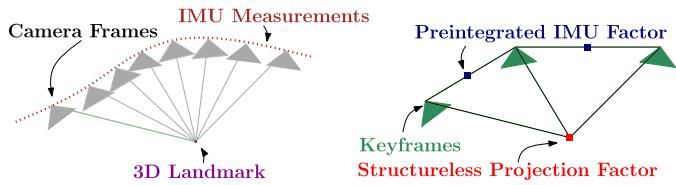
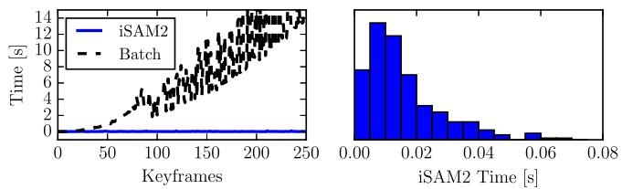
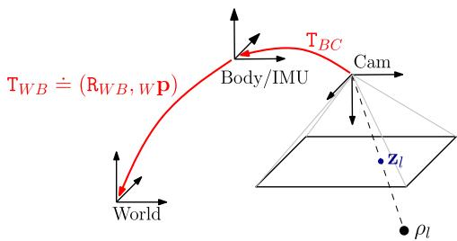

本节目标
读完你应该能：讲清预积分量被写成「状态项 + 零均值高斯噪声」的形式；说出自偏置修正为什么「不必重积分」；复述协方差的卡尔曼式递推；并写出连接两关键帧的 9 维 IMU 因子残差。
和前面课程怎么接
接 0029：上一节只给定义，这一节给推导、雅可比、协方差、因子。接 0019：本节的 structureless 视觉因子正是 0019 的 Schur 消元用在因子图里，且投影子维数 $2n_l-3$ 与 0028 的 $2M_j-3$ 是同一个「减 3」。接 0002：总目标函数就是第一季 MAP → 非线性最小二乘的直接实例。
1. ① 噪声模型与分离（式 38/39）
第一步：把上一节定义的预积分量，正式写成「状态项 + 零均值高斯噪声」的形式。先记一个新符号：带波浪的 $\Delta\tilde{\mathrm R}_{ij}$ 等是「带噪声的测量值」（从真实 IMU 读数算出来的），而 $\mathrm R_i^\top\mathrm R_j$ 等是「真值」。
大白话：带噪声的预积分量 = 真值（由状态算出的相对量）+ 一个小扰动（$\delta\pmb\phi,\delta\mathbf v,\delta\mathbf p$）。把这三项扰动打包成一个 9 维向量 $\pmb\eta^\Delta_{ij}$，它服从零均值高斯分布，协方差是 $\Sigma_{ij}$。
为什么 $\delta\pmb\phi_{ij}$ 能当零均值高斯
原文说得很直接：因为 $\delta\pmb\phi_{ij}$ 是「a linear combination of zero-mean noise terms」（零均值噪声项的线性组合）——传感器噪声本身是零均值高斯，而 $\delta\pmb\phi$ 只是它们的一阶线性组合，所以自然还是零均值高斯。正是这一条，让上面的式子刚好落回式 (12) 那种 SO(3) 上的高斯形式，整个概率框架才自洽。
2. ② 偏置更新与雅可比预计算（式 44 + 附录 IX-B）
现实里 IMU 的零偏 $\mathbf b^g,\mathbf b^a$ 不是固定的，会缓慢漂移。预积分量是在「旧偏置 $\bar{\mathbf b}_i$」下算的，当优化器更新了偏置估计时，怎么快速修正？答案是一阶泰勒展开：
意思是：偏置从 $\bar{\mathbf b}$ 变到 $\bar{\mathbf b}+\delta\mathbf b$，预积分量的变化可以用「雅可比 × 偏置增量」近似补上，而不必用新偏置从头重积分。两条雅可比的闭式是：
★ 本节的「实用结论」（务必凸显）
原文说：「The Jacobians remain constant and can be precomputed during the preintegration.」又说「the Jacobians can be computed incrementally, as new measurements arrive.」——雅可比在预积分阶段就能算好、且可以随着新 IMU 数据增量更新。这就是「偏置更新不必重积分」的全部依据：偏置一变，只乘一个事先算好的雅可比，立刻修正，省掉整段重积分。
偏置本身也不是常量，而是随机游走（random walk）——意思是它每时刻被一小撮高斯噪声慢慢推动（式 46/47/48）：
于是在因子图里还要额外加一项「偏置随机游走因子」$\mathbf r_{b_{ij}}$，约束相邻时刻的偏置之差要符合随机游走噪声（回忆 0029 的 Fig. 3 右图里那条偏置边）。
3. ③ 噪声传播与协方差递推（式 42/43 + 附录 IX-A）
现在问：噪声 $\delta\pmb\phi,\delta\mathbf v,\delta\mathbf p$ 是怎么从一条条 IMU 测量累积出来的？逐条展开：
看第一行：旋转噪声 $\delta\pmb\phi_{ij}$ 是每条 IMU 角速度噪声 $\pmb\eta_k^{gd}$ 经（带右雅可比 $\mathrm J_r^k$ 的）旋转搬运后求和。后两行：速度/位置噪声除了直接累加加速度噪声，还要经过「$\delta\pmb\phi$（姿态噪声）耦合」那一项（带 ${}^\wedge$ 表示取反对称矩阵）。
把这三行打包成线性递推 $\pmb\eta^\Delta_{ij}=\mathbf A_{j-1}\pmb\eta^\Delta_{ij-1}+\mathbf B_{j-1}\pmb\eta^d_{j-1}$，协方差就跟着逐条 IMU 增量往前长：
这是「卡尔曼滤波式」的递推
留意它的长相：新协方差 = 旧协方差经 $\mathbf A$ 传播 + 新噪声经 $\mathbf B$ 注入。这正是卡尔曼滤波里协方差预测的那一步（上一节 0028 的 Lyapunov 方程是它的连续版）。每来一条 IMU 测量，就更新一次 $\Sigma$，直到 $j$。原文还点明离散噪声与连续谱噪声的关系：$\mathrm{Cov}(\pmb\eta^{gd})=\frac{1}{\Delta t}\mathrm{Cov}(\pmb\eta^g)$。
4. ④ IMU 因子与残差构造（式 45）
攒齐了预积分量、偏置修正、协方差，就能把预积分量做成一个因子（factor）塞进因子图优化。残差（residual）的构造逻辑和上一节 MSCKF 的 $\mathbf r=\mathbf H\tilde{\mathbf X}+\text{noise}$ 是同一件事的优化版：
残差逻辑（先建立直觉）
左边是用「当前状态估计」算出来的相对量；右边是用「IMU 测量」算出来的预积分量；两者相减，就是这条边的残差。优化器要找让所有残差都接近 0 的状态。
这是一条连接 $\{\mathrm R_i,\mathbf p_i,\mathbf v_i,\mathbf b_i\}$ 与 $\{\mathrm R_j,\mathbf p_j,\mathbf v_j\}$ 的 9 维边，$\mathbf r_{\mathcal T_{ij}}\in\mathbb R^9$。注意旋转残差外面套了 $\mathrm{Log}$（把旋转矩阵变回切空间里的向量，才能相减）；速度/位置残差则是「状态算的 − 预积分量」。

怎么看这张图：回到本节封面图。本节第 4 节讲的 IMU 因子，正是右图里那条把两关键帧连起来的粗边——它把中间所有密密的 IMU 测量「压缩」成了一个 9 维约束。视觉因子（细边）则把观测到同一路标的关键帧连起来，且不优化三维点（structureless）。
雅可比（附录 IX-C）有几条常用，比如 $\partial\mathbf r_{\Delta\mathrm R_{ij}}/\partial\delta\pmb\phi_j=\mathrm J_r^{-1}(\mathbf r_{\Delta\mathrm R})\mathrm R_j^\top\mathrm R_i^\top$、$\partial\mathbf r_{\Delta\mathbf v_{ij}}/\partial\delta\mathbf v_j=\mathrm R_i^\top$、$\partial\mathbf r_{\Delta\mathbf p_{ij}}/\partial\delta\mathbf p_i=-\mathbf I_3$。不必抄全——记住一句话即可：这些雅可比都能解析写出，不必数值差分，这正是本文「全部雅可比解析给出」贡献的落地。
5. ★ 全篇总目标函数（式 25/26）
把上面所有因子（IMU 因子 + 视觉因子 + 先验 + 偏置随机游走）拼起来，就是整个 VIO 的最大后验（MAP）问题。先写概率形式，再写它等价的最小二乘：
翻译：后验概率正比于「先验 × 所有 IMU 因子 × 所有视觉因子」。最小化时，每个因子贡献一个「残差的平方（按各自协方差加权）」。状态定义为 $\mathbf x_i\doteq[\mathrm R_i,\mathbf p_i,\mathbf v_i,\mathbf b_i]$，其中 $\mathbf b_i=[\mathbf b_i^g\ \mathbf b_i^a]\in\mathbb R^6$。
★ 与第一季 0002 课的连接
这就是第一季第 0002 课那个「MAP → 非线性最小二乘」的直接实例，只是边换成了 IMU 因子和视觉因子。整个 SLAM 的套路没变：把每个传感器读数变成一个残差，所有残差平方和最小，解就是位姿。区别只在于这次的边是「流形上的、预积分过的、解析雅可比的」。
6. ★ structureless 视觉因子 = Schur 消元（式 50/54/55）
视觉因子也很有讲究。作者用 structureless（无结构） 策略：不把三维点放进状态，而是当场消掉。视觉残差是：
其中 $\pi$ 是投影函数，$\rho_l$ 是第 $l$ 个三维点。对点坐标 $\rho_l$ 求解（消去），得到：
代回去之后，代价变成「只含位姿 $\delta\mathbf T$」的形式。原文点名这是 BA 里的 Schur complement trick（舒尔补技巧）。最关键的数字：那个投影子（左乘的 $\mathbf I-\mathbf E_l(\mathbf E_l^T\mathbf E_l)^{-1}\mathbf E_l^T$）把点的 3 个自由度消掉，投影子维数是 $2n_l-3$（$n_l$ 是观测到该点的帧数）。
★ 请把这个数字钉死
这个 $2n_l-3$ 与上一节 0028 MSCKF 的 $2M_j-3$ 是同一个数字——两种范式（优化 vs 滤波），同一个「减 3」。减掉的都是「一个三维点 / 路标的 3 个坐标自由度」。这也再次证明：无论你用优化还是滤波，「把不想估的变量消掉」都是同一个思想，只是工具不同（Schur 补 vs 零空间投影）。
7. 实验、局限与 OCR 修正
实验数字在上一节已详述（训练/推理约 10 ms、漂移 0.3 m vs 0.7 m、未边缘化旧状态），本节侧重讲「算法复杂度与精度从何而来」：来自三点——预积分把 IMU 压缩成常数时间的一条边（不重积分）、iSAM2 的增量平滑（只重算受影响区域）、以及全部雅可比解析可得（无数值差分开销）。Fig. 6 用数据说明了实时性：

怎么看这张图：这是「为什么能实时」的量化证据。左图说明 iSAM2 增量平滑比「每次从头批估计」省得多；右图显示本方法每次推理的耗时集中在很低的值（毫秒级），分布很稳。配合上一节的 10 ms/关键帧，足以支撑实时 VIO。

怎么看这张图：这是坐标系约定图。它澄清了一个前提：机体系 B 就等同于 IMU 系，相机相对机体的外参 T 是事先标定好的。理解这个约定，才看得懂前面所有公式里 $\mathrm R_i,\mathbf p_i$ 指的是机体/IMU 的位姿。
明确局限（逐条，与上一节一致）
① 积分式本身是近似（假设两测量间朝向恒定，$\mathrm R(t)$ 常数）；② 偏置一阶修正只在 $\delta b$ 小时成立；③ 忽略地球自转（把世界系当惯性系）；④ 无初始化 / 重力方向估计章节（空白）；⑤ 前端会污染对比；⑥ Tango 对比非同传感器仅定性；⑦ 真实实验无法算 NEES（只能用单次 3σ 图，且对初始位姿/手眼标定极敏感）；⑧ 未做回环、未做长期一致性。
OCR 提醒（务必说明你修正了什么）
原始 PDF 文字里，式 (33) 的 $\Delta L$ 共 6 处应为 $\Delta t$（本课程已用 $\Delta t$）。附录式 (59)(61)(69)(83) 出现 $\mathbf B^{\mathrm{sy}}_{1,1}$、$\Delta\Psi$、$y^k_{\tau_0}$ 这类原论文根本不存在的「幻觉符号」，不可照抄。还有两处具体修正：L851 写的 $\partial\mathbf r_{\Delta\mathbf p}/\partial\delta\mathbf v_j=-\mathrm R_i^\top\Delta t_{ij}$ 是错的，应为 $\mathbf 0$（因为 $\mathbf r_{\Delta\mathbf p}$ 里不含 $\mathbf v_j$）；L871 漏掉了一行 $\partial\mathbf r_{\Delta\mathbf v_{ij}}/\partial\delta\mathbf v_j=\mathrm R_i^\top$。总之：md 的公式抄写不可信，本课程一律用正确形式。
互动判断
偏置估计更新时，预积分量为什么「不必重积分」？
课后练习
展开查看答案
练习 1：式 (38) 里 $\delta\pmb\phi_{ij}$ 为什么可以当作零均值高斯噪声？
答：因为 $\delta\pmb\phi_{ij}$ 是一堆零均值传感器噪声项（$\pmb\eta_k^{gd}$ 等）的线性组合（见式 42），原文明确说它是「linear combination of zero-mean noise terms」，所以保持零均值高斯，从而整组预积分噪声 $\pmb\eta^\Delta_{ij}\sim\mathcal N(\mathbf 0,\Sigma_{ij})$ 自洽。
展开查看答案
练习 2：协方差递推 $\Sigma_{ij}=\mathbf A_{j-1}\Sigma_{ij-1}\mathbf A_{j-1}^\top+\mathbf B_{j-1}\Sigma_\eta\mathbf B_{j-1}^\top$ 和哪种经典滤波步骤同构？它和 0028 的 Lyapunov 方程有什么关系？
答：这是卡尔曼滤波的「协方差预测」步（旧协方差经 $\mathbf A$ 传播 + 新噪声经 $\mathbf B$ 注入）。0028 的 Lyapunov 方程 $\dot{\mathbf P}=\mathbf F\mathbf P+\mathbf P\mathbf F^T+\mathbf G\mathbf Q\mathbf G^T$ 是它的连续时间版本；本节是离散时间逐条 IMU 递推版。
展开查看答案
练习 3：IMU 因子为什么是「9 维」的？它由哪三部分残差组成？
答：因为预积分量有三类——相对旋转、相对速度、相对位置，各贡献 3 维，合起来 $\mathbf r_{\mathcal T_{ij}}\in\mathbb R^9$。三部分分别是 $\mathbf r_{\Delta\mathrm R}$、$\mathbf r_{\Delta\mathbf v}$、$\mathbf r_{\Delta\mathbf p}$（式 45）。
展开查看答案
练习 4：structureless 视觉因子里的投影子维数 $2n_l-3$，和哪一节的哪个数字同源？为什么「减 3」？
答：与 0028 MSCKF 的 $2M_j-3$ 同源，都是「减 3」。减掉的是被消去的那个三维点 / 路标的 3 个坐标自由度。两者分别是「优化里的 Schur 补」和「滤波里的零空间投影」对同一个思想的不同实现。